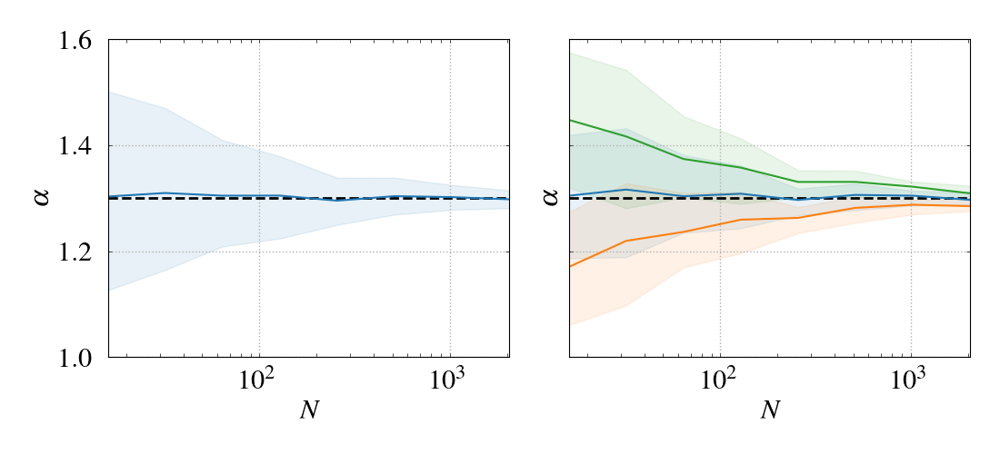
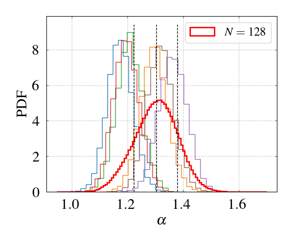
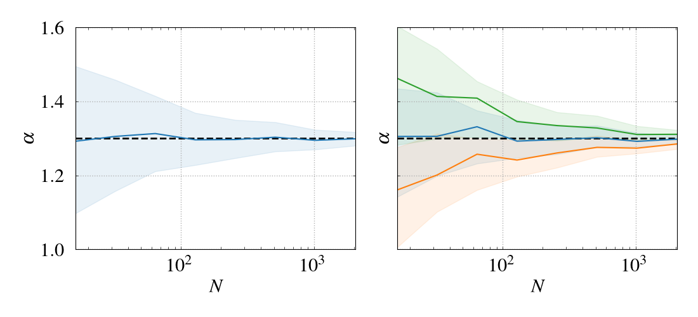

Introduction
Population inference , or hierarchical inference , is a class of inference problems where we want to constrain the (hyper)parameters of a theoretical distribution given a set of samples from that distribution. For example, consider the prices of a product in different stores. From theoretical considerations, we might expect that these prices follow a Gaussian distribution with some mean and standard deviation. Given the observed prices from various stores (samples), we can then try to infer the mean and standard deviation (hyperparameters). However, we must also keep in mind that we cannot always record all the samples we would like. For instance, smaller stores may not publish their price statistics, or we might not even be aware of those stores. This is referred to as selection bias , or selection effects . For consistent inference, we must be able to quantify the fraction of samples that fall through the cracks.
In astrophysics, one of the fundamental properties of stars, galaxies, and other celestial objects is their mass. The shape of the mass distribution in an astrophysical population (e.g., stars) can provide valuable insights into that population. In this post, I summarize the inference process (see full code ) for a simple mass distribution that follows a power law within a specific mass range:
$$
f(m) = \frac{m^{-\alpha}}{A(\alpha, M_1, M_2)}\,, \qquad M_1\leq m\leq M_2\,,
$$
where \(A\) is the normalization constant. Namely, assuming that the bounds \(M_1\) and \(M_2\) are known, let us infer \(\alpha\) given a sample \(\left\{m_i\right\}_{i=1}^{N}\) of \(N\) masses from this distribution. Below I consider two cases:
each mass in the sample is measured perfectly,
there are individual measurement uncertainties described by log-normal probability distribution functions (PDF) centered at the true value of each mass.
On the technical side, I use the following techniques:
No measurement uncertainties
A starting point for the hierarchical inference is the log-posterior
$$
\log{p(\alpha|D)} = \mbox{const} -N\log{\mathcal{F}} + \sum\limits_{i=1}^N{\log{\widetilde{f}(m_i)}}\,,
$$
where \(\mathcal{F}=\mathcal{F}(\alpha)\) is the fraction of observed masses and \(\widetilde{f}(m)\) is the effective mass distribution corrected for the uncertainties of individual events. In the ideal case of vanishing uncertainties, \(\widetilde{f}(m)=f(m)\) . The fraction \(\mathcal{F}\) quantifies potential selection effects and is defined as
$$
\mathcal{F}(\alpha) = \int\limits_{M_1}^{M_2}{{\rm d}m_0\,f(m_0|\alpha)p(D_\uparrow|m_0)}\,,
$$
where \(p(D_\uparrow|m_0)\) is the probability to detect a mass \(m_0\) .
In this ideal case, the probability of detecting a mass in the range \([M_1,M_2]\) is unity, and, therefore,
$$
\mathcal{F}(\alpha) = \int\limits_{M_1}^{M_2}{{\rm d}{m_0}\,f(m_0|\alpha)} = 1\,.
$$
The log-posterior for \(\alpha\) given the data \(D\equiv\left\{m_i\right\}_{i=1}^{N}\) then reads
$$
\label{app:eq:log-post1}
\log{p(\alpha|D)} = \mbox{const} -N\log{\mathcal{F}} + \sum\limits_{i=1}^N{\log{f(m_i)}} = \mbox{const} -N\log{A(\alpha,M_1,M_2)} - \alpha\sum\limits_{i=1}^N{\log{m_i}}\,.
$$
I ran the inference for 11 sample sizes, \(N=2, 4, 8,\ldots\,,2048\) (powers of \(2\) ), and for 48 realizations of each sample. Figure 1 shows the inferred value of \(\alpha\) as a function of the sample size. The shaded regions show inference uncertainties. There are two contributions to the uncertainties: (i) from running the inference on a single realization, and (ii) due to the finite size of the population samples. In the left panel, posterior samples from all the realizations for a given \(N\) are combined, and their median (blue line) and the \(16\) th- and \(84\) th-percentile quantiles (shaded region) are calculated. In the right panel, the median and quantiles are calculated for the posterior samples of each individual realization. Then, ''second-order'' medians and quantiles are computed across realizations. These realization-level quantiles are depicted in blue (the median and its uncertainty over realizations), orange (\(16\) th-percentile quantile), and green (\(84\) th-percentile quantile). Figure 2 shows the histograms of posterior samples from a few realizations of \(N=128\) as well as the combined histogram.

Figure 1: Inferred values of the exponent vs. Sample size for the case of vanishing individual uncertainties. The shaded regions represent inference uncertainties, and the horizontal dashed line indicates the fiducial value. See the text for more details.

Figure 2: Posterior samples from different realizations (lighter histograms in various colors) and the combined posterior samples (red).
Log-normal uncertainties
Here I assume that the measured value \(m\) of a mass randomly deviates from its true value \(m_0\) , with the likelihood given by a log-normal distribution:
$$
\begin{align}
p\left(\log{m}\vert\log{m_0}\right)&\equiv\frac{{\rm d}{(\log{N})}}{{\rm d}{(\log{m})}} = \frac{1}{\sqrt{2\pi\sigma^2}}\exp{\left(-\frac{(\log{m}-\log{m_0})^2}{2\sigma^2}\right)}\,, \\
p\left(m\vert m_0\right) &\equiv\frac{{\rm d}{(\log{N})}}{{\rm d}{m}} = m^{-1}p\left(\log{m}\vert\log{m_0}\right)\,.
\end{align}
$$
The probability for a mass \(m_0\) to be detected is then
$$
\begin{align}
p(D_\uparrow|m_0) &= \int\limits_{\log M_1}^{\log M_2}{\frac{{\rm d}{(\log{N})}}{{\rm d}{(\log{m})}}\,{\rm d}{(\log m)}} \nonumber \\
&=\frac{1}{\sqrt{2\pi\sigma^2}}\int\limits_{y_1}^{y_2}{e^{-(y-y_0)^2/2\sigma^2}{\rm d}{y}} = \frac 12\left[{\rm erf\,}{\left(\frac{y_2-y_0}{\sigma\sqrt{2}}\right)} - {\rm erf\,}{\left(\frac{y_1-y_0}{\sigma\sqrt{2}}\right)}\right]\,,
\end{align}
$$
where \(y\equiv \log{m}\) (correspondingly, \(y_1=\log{m_1}\) , etc.), and the definition for the error function
$$
{\rm erf\,}z = \frac{2}{\sqrt{\pi}}\int\limits_0^z{e^{-t^2}{\rm d}{t}}\,.
$$
The effective mass distribution is then obtained by convolving the log-normal distribution with \(f(m)\) :
$$
\begin{align}
\widetilde{f}(m') &= \int\limits_0^{+\infty}{p\left(m'\vert m\right)f\left(m\vert\alpha\right){\rm d}{m}} \nonumber \\
&= \frac{1}{m'}\int\limits_{-\infty}^{+\infty}{p\left(y'\vert y\right)f\left(e^{y}\vert\alpha\right)e^{y}{\rm d}{y}} = \frac{1}{m'} \int\limits_{y_1}^{y_2}{\frac{e^{-\frac{(y-y')^2}{2\sigma^2}}}{\sqrt{2\pi\sigma^2}}\frac{e^{-(\alpha-1)y}}{A(\alpha)}{\rm d}{y}} \nonumber \\
&= f(m')\times\frac 12e^{\delta^2}\left[{\rm erf\,}{\left(\frac{y_2-y'}{\sigma\sqrt{2}} + \delta\right)}-{\rm erf\,}{\left(\frac{y_1-y' }{\sigma\sqrt{2}} + \delta\right)}\right]\,, \qquad \delta\equiv \frac{\sigma(\alpha-1)}{\sqrt{2}}\,.
\end{align}
$$
Note that, from the above definition, it automatically follows that
$$
\int\limits_0^{+\infty}{\widetilde{f}(m')\,{\rm d}{m'}} = \int\limits_{-\infty}^{+\infty}{{\rm d}{y'}\,\frac{e^{-\frac{(y-y')^2}{2\sigma^2}}}{\sqrt{2\pi\sigma^2}}\int\limits_{y_1}^{y_2}{\rm d}{y}\,\frac{e^{-(\alpha-1)y}}{A(\alpha)}} = 1\times 1 = 1\,.
$$
Then, the fraction of observed masses (with the cutoffs \(y_1\) and \(y_2\) playing the role of a selection effect) reads
$$
\begin{align}
\widetilde{\mathcal{F}}=\int\limits_{M_1}^{M_2}{\widetilde{f}(m')\,{\rm d}{m'}}&=\int\limits_{0}^{+\infty}{{\rm d}{m}\,f\left(m\vert\alpha\right)\int\limits_{M_1}^{M_2}{{\rm d}{m'}\,p\left(m'\vert m\right)}} \nonumber \\
&\equiv \int\limits_{M_1}^{M_2}{{\rm d}{m}\,f\left(m\vert\alpha\right)p\left(D_\uparrow\vert m\right)} = \frac{1}{2A}\int\limits_{y_1}^{y_2}{{\rm d}{y}\,e^{-(\alpha-1)y}\left[{\rm erf\,}{\left(\frac{y_2-y}{\sigma\sqrt{2}}\right)} - {\rm erf\,}{\left(\frac{y_1-y}{\sigma\sqrt{2}}\right)}\right]} \nonumber \\
&=\frac 12{\rm erf\,}{\Delta y_\sigma} \nonumber \\
&+ \frac{e^{\delta^2}}{2(\alpha-1)A}\left\{e^{-(\alpha-1)y_1}\left[{\rm erf\,}{\left(\Delta y_\sigma + \delta\right)} - {\rm erf\,}{\delta}\right] - e^{-(\alpha-1)y_2}\left[{\rm erf\,}{\left(\Delta y_\sigma - \delta\right)}+{\rm erf\,}{\delta}\right]\right\}\,, \nonumber \\
&{}
\end{align}
$$
where
$$
\Delta y_\sigma \equiv \frac{y_2-y_1}{\sigma\sqrt{2}}\,.
$$
And again, I ran the inference for 11 sample sizes, \(N=2, 4, 8,\ldots\,,2048\) (powers of \(2\) ), with 48 realizations of each, using \(\sigma=0.5\) and the hierarchical log-posterior
$$
\log{p(\alpha|D)} = \mbox{const} -N\log{\widetilde{\mathcal{F}}} + \sum\limits_{i=1}^N{\log{\widetilde{f}(m_i)}}\,.
$$
Figure 3 shows the results. For the figure description, see the end of the previous section.

Figure 3: Inferred values of the exponent vs. Sample size for the case of log-normal individual uncertainties. The shaded regions represent inference uncertainties, and the horizontal dashed line indicates the fiducial value. See the text for more details.
Concluding remarks
It may seem counterintuitive that Figure 1 and Figure 3 show similar levels of uncertainty at each given sample size. In the second case, I assumed that individual masses have a log-uncertainty \(\sigma=0.5\) which translates to roughly \(50\%\) relative uncertainty. However, even such a large uncertainty in individual masses does not significantly affect the power-law shape of the fiducial distribution \(f(m)\) . For masses well within the range \([M_1,M_2]\) , the effective PDF \(\widetilde{f}(m)\) only changes its amplitude but retains its power-law slope. Indeed, the logarithmic length of the mass range is 3 dex (i.e., three orders of magnitude between \(M_1=10^2M_\odot\) and \(M_2=10^5M_\odot\) ), whereas the width of the individual likelihood is \(\sigma/\log 10\approx 0.2\;\mbox{dex}\) . This is why individual uncertainties begin to affect the shape of the PDF only when the corresponding masses approach the boundaries of the mass range. Therefore, we should not expect Figure 3 to differ much from Figure 1 , especially since the machinery of hierarchical Bayesian inference consistently incorporates individual uncertainties. On the other hand, a high \(\sigma\) will likely have a stronger effect on the inference uncertainty of \(M_1\) and \(M_2\) , should we include them in the list of hyperparameters to be inferred, rather than assuming they are known.
This last statement applies to a hypothetical situation where the mass boundaries are assumed to be physical, i.e., no masses exist outside the mass range under consideration. More realistically, there are masses smaller than \(M_1\) and/or larger than \(M_2\) , but we introduce the cutoffs as a kind of selection effect. To illustrate this, consider masses only within a smaller mass range \([M_1^\prime,M_2^\prime]\) , \(M_1<M_1^\prime<M_2^\prime<M_2\) , while drawing samples from the original population. With the probability of detection being (no individual uncertainties)
$$
p\left(D_\uparrow|m_0\right) = \left\{
\begin{array}{ll}
1\,, & M_1^\prime\leq m_0\leq M_2^\prime\,, \\
0\,, & \mbox{otherwise},
\end{array}
\right.
$$
the fraction of observed masses reads
$$
\mathcal{F}^\prime = \int\limits_{M_1^\prime}^{M_2^\prime}{{\rm d}{m}\,f(m)} = \frac{A(\alpha,M_1^\prime,M_2^\prime)}{A(\alpha,M_1,M_2)}\,,
$$
and the log-posterior
$$
\begin{align}
\log{p(\alpha|D')} &= \mbox{const} -N'\log{\mathcal{F}'} + \sum\limits_{i=1}^{N'}{\log{f(m_i)}} \\
&= \mbox{const} -N'\log{A(\alpha,M_1^\prime,M_2^\prime)} - \alpha\sum\limits_{i=1}^{N'}{\log{m_i}}\,,
\end{align}
$$
where we only include those \(N'\) masses that are in the range \([M_1^\prime,M_2^\prime]\) . This formula is the same as for the wider range but with substitutions \(M_1\to M_1^\prime\) , \(M_2\to M_2^\prime\) .